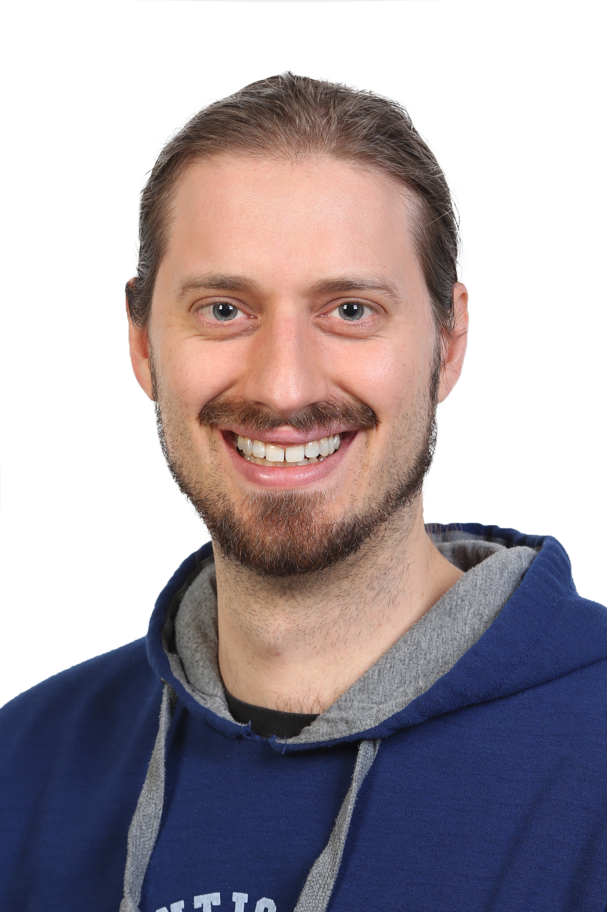
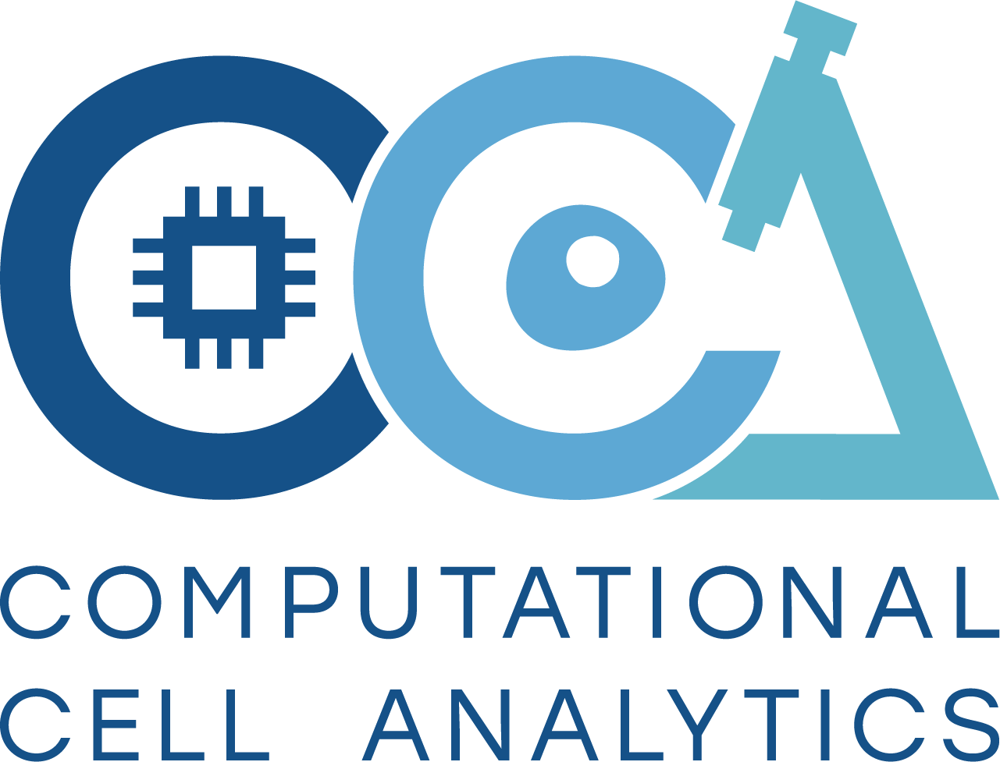
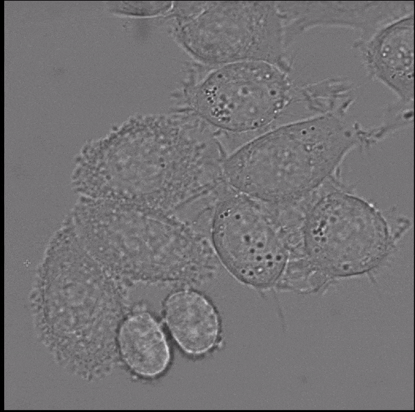
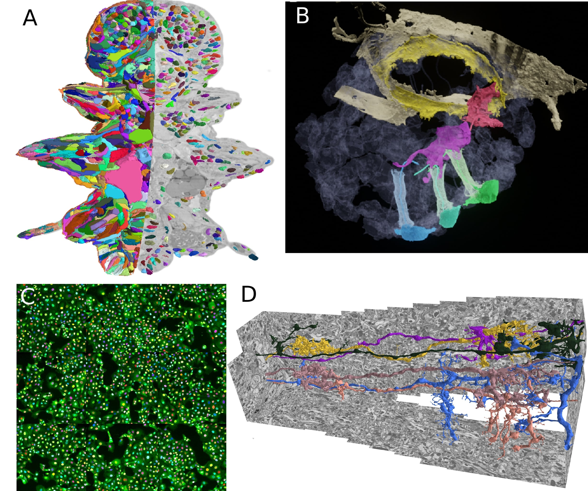

I am a Juniorprofessor at Georg-August University Göttingen and a member of the Institute of Computer Science and CIDAS. I lead the research group for Computational Cell Analytics since March 2022. The research of my group is focused on deep learning for biology and medicine, especially for biomedical imaging.
Previously, I have worked as a PostDoc at EMBL Heidelberg in the group of Anna Kreshuk and did my PhD at the University of Heidelberg under the supervision of Anna Kreshuk and Fred Hamprecht. During my PhD and PostDoc I have mainly worked on instance segmentation problems, with a focus on large volumetric electron microscopy data.
constantin.pape@informatik.uni-goettingen.de
Institute of Computer Science
Georg-August University Göttingen

We are looking for a PhD student and a PostDoc to work on a very exciting project to resolve the dynamics of biomolecules through super-resolution microscopy in a joint project with the department of Stephan Hell at the MPI-NAT. The details can be found here:
We are currently not offering any thesis topics. Previous topics have been on the application of deep learning and computer vision in biology and medicine. You can find an overview of previous projects here. New projects will be offered in the winter term 2025.
We develop deep learning and AI methods for biology and medicine. We mainly develop computer vision methods for the analysis of biomedical image data, but are also interested in combining different modalities, such as image and omics data. Our two main research areas are building (vision) foundation models for biology and medicine and protein structure analysis in cryogenic electron microscopy and in super-resolution microscopy. We apply these methods to challenging biomedical research questions in collaboration with life scientists.
We are dedicated to open source and open science and we are involved in multiple related efforts. In particular, the bioimage.io modelzoo, a resource to share deep learning models for microscopy image analysis and ome.ngff, a new image data format that supports efficient storage of large data and on-demand access in the cloud, and MoBIE, a Fiji plugin for exploring and sharing large multi-modal image data.
Our research is funded and supported by the DFG through a Sachbeihilfe, the SFB1286 on Quantitative Synaptology", and the Multiscale Bioimaging Cluster of Excellence (MBExC). We are part of the CAIMed consortium
The term foundation models was coined for powerful deep learning models that can be applied to a wide range of tasks. It initially refered to large language models, such as (Chat)GPT, Claude, LLaMA, etc. Foundation models have now been introduced in many other domains, including computer vision for general purpose segmentation (Segment Anything), for connecting images and text
(

One of our main goals is to develop such foundation models for biomedical imaging. In particular, we have created Segment Anything for Microscopy, which enables state-of-the-art interactive and automatic segmentation for microscopy data. This work includes a popular graphical tool for image analysis, see interactive annotation with it on the right. We have extended this work to Histopathology, Medical Imaging, and Efficient Finetuning.
We also develop segmentation models for other applications, for example analysis of the synaptic ultrastructure in electron microscopy (SynapseNet). In the future, we plan to develop more powerful, multi-modal foundation models for biology, for example connecting images, omics data, and text.
We are also developing methods for the analysis of protein structure in high-resolution microscopy, which includes both super-resolution microscopy and cryogenic electron microscopy. Here, we have contributed to accurate protein structure reconstructions from optical imaging with ONE microscopy and are working on methods for protein identification in cryogenic electron tomography.

My previous research has been focused on boundary based instance segmentation. I have developed graph-based methods based on globally optimal graph partitioning and fast heuristic partitioning. The initial focus of my work has been neuron segmentation in electron micrscopy (D), for which I have developed methods that scale to multi terayte volumes and can incorporate biological priors. These methods have been used in various life science applications: building a high resolution genetic and morphological atlas of P. dumerilii (A), analyzing the morphology of precursor neural cells in sponges (B) or developing an imaging based SARS-CoV-2 antibody assay (C). I plan to continue this work and make these methods available through easy-to-use tools in order to democratize the access to large-scale volumetric segmentation.
From our group:
From my PhD and PostDoc:
I hold a lecture on deep learning and offer seminars on applications of deep learning at the University of Göttingen. See the next paragraph for a short overview of these courses and check out UniVZ for the courses currently offered.
In addition to teaching at the university I co-organize the Deep Learning for Image Analysis course at EMBL, see the last course page for details. I am also a Hertha Sponer College Instructor, where I teach a course on advanced image analysis (course details will follow soon).
The lecture covers deep learning and its applications to computer vision. The following topics are covered:
The seminar discusses advanced topics in applications of deep learning methods in biology and medicine. We cover applications in image analysis, structural biology (e.g. protein folding with Alpha Fold), large language models in medicine and more. The seminar is offered every summer term.